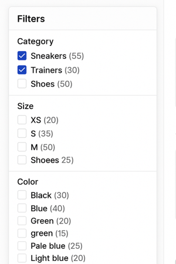
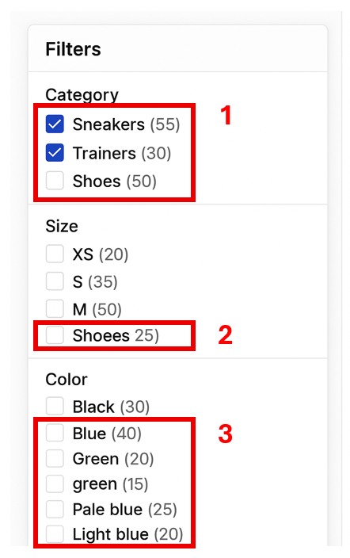
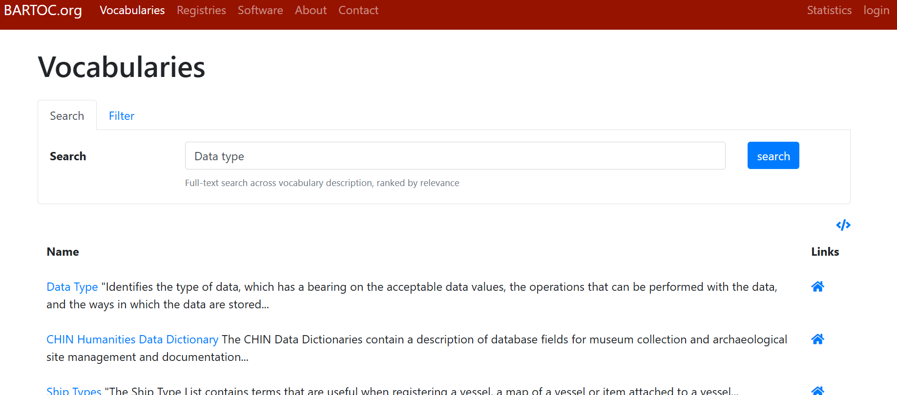

Unit 2.4 Controlled vocabularies
Unit overview
Unit study time
- 2.5 hours
Intended learning outcome
- Recognise best practice principles in metadata creation
- Define controlled vocabularies and describe their role in metadata creation
- Compare controlled vocabularies and identify which is most appropriate for your context
- Define thesauri, taxonomies and ontologies in relation to metadata
Metadata management and best practice
As we explored in the last unit, metadata can be leveraged as a search and filter tool on data catalogues. This enables people to find data based on keywords, topics or dates. Through being machine actionable, metadata is a powerful form of documentation that provides more functionality than unstructured documentation.
In order to be machine actionable, computers need to be able to read metadata. Therefore, metadata must be structured and stored in appropriate, machine readable formats. In unit 2.1 we touched on machine readable formats that metadata should be stored in (e.g. CSV, XML and JSON).
However, just because machines can read metadata does not mean that metadata is automatically valuable as a discovery tool.
The screenshot below shows filters for a shopping site based on the object's metadata. If you had to use these filters to find blue trainers, what challenges might you run into? Would these filters easily help you to discover blue trainers?

Poor quality metadata
Duplicate terms, spelling errors and wrongly placed categories create 'dirty' metadata which has limited use as a discovery tool. While machines can read dirty metadata, they can't action it correctly as the relationships between different objects are not correctly mapped. This means the machine confuses different items and mixes different categories.

[1+2] Inconsistent or incorrect terms
A machine doesn’t know that 'Shoees' is probably just a typo for 'Shoes', instead it treats them as two totally separate categories. Same goes for different terms like 'Trainers' and 'Sneakers.” Even though they mean the same thing to us, the system sees them as unrelated, which means your search results could miss half the data unless you manually spot and fix it.
[2] Incorrect structure
'Shoees' is also placed in the 'Size' category meaning it's linked to 'XS, S, M, L'. This is because the structure of the metadata and the relationship between the terms is incorrect. So while the computer can read this metadata, it can't action it correctly which means our ability to use metadata as a discovery tool is hindered.
[3] Vague and undefined metadata
Then there’s vague metadata like “light blue” vs. “pale blue.” Are they the same colour? Should they be grouped together? Without clear definitions, it’s hard to tell, and that can lead to confusion or missed connections.
Impact of poor quality metadata
'Dirty' (poor quality) metadata...
- Hinders the searchability and discoverability of data as computers cannot read and interpret the metadata effectively
- Reduces the reliability and validity of the data
- Reduces the interoperability of the data as it is harder to identify and compare similar objects
- Makes research processes more time consuming as people have to identify what terms are relevant for their search and work around errors
Thinking back to the FAIR principles, poor-quality (“dirty”) metadata makes interoperability difficult. When metadata doesn’t follow the required structure, it cannot easily integrate into data catalogues or repositories. This lack of standardisation prevents us from comparing metadata across studies, which in turn limits opportunities for data reuse and cross-study analysis.
Metadata best practice
To help us overcome these issues and ensure metadata is high-quality and follows best practice.
Best practice principles
Some best practice principles to consider...
- Accurate descriptions that provide the appropriate level of information necessary to understand a project
- Being consistent with the use of terms within a project's metadata to avoid confusion or misinformation
- Use standardised terms that are commonly used within the relevant discipline and are unlikely to become redundant
- Interoperability of metadata with other studies' so it can be compared across resources and deposited on centralised platforms such as data catalogues where it can be searched and filtered
Tools to implement best practice
Two main tools that are used implement metadata creation best practice are...
- Controlled vocabularies
- Metadata schemas and standards
These tools help us standardise metdata in order to make sure it is accurate, consistent and interoperable.
From a research data management perspective, CODATA define standardisation as...
The process or act of converting (meta)data to a common format or aligning to a common vocabulary or schema in order to ease analysis and facilitate the comparison or integration of disparate sets of data [1].
In this unit, we will look at controlled vocabularies and the related concepts of theasuri, taxonomies and ontologies.
In the next unit (2.5), we will look at metadata schemas and standards.
Controlled vocabularies
What are controlled vocabularies?
CODATA defines controlled vocabularies as a...
'List of standardised terminology, words, or phrases, used for indexing or content analysis and information retrieval, usually in a defined information domain.'[2]
NBI Sweden defines controlled vocabularies as...
'...a list of terms that describes a certain domain of knowledge. In the controlled vocabulary you only use one term to describe one particular phenomenon, excluding all other synonyms.'[3]
You can use controlled vocabularies in your metadata. By restricting the information you can use to a pre-defined list of terms, controlled vocabularies standardise metadata inputs, reducing the risk of human errors, inconsistencies and confusion.
In the previous example, using a controlled vocabulary would remove the issue of having confusing categories, 'pale blue' and 'light blue' or 'Trainers' and 'Sneakers', and prevent the formatting error of 'Green' and 'green'.
Creating your own restricted list of terms
You can create your own list of restricted terms for a metadata element. By controlling the terms you use, you create consistent metadata and reduce the potential for human errors. To ensure your metadata is accurate and easy to understand, it's important to provide the definitions for each term in your documentation. This allows other people and your future self to refer to them easily. This can be considered a personal controlled vocabulary, which can be created by an individual or an organisation, as it's for internal use and not publicly shared.
Using a publicly available controlled vocabulary
When we talk about controlled vocabularies, we are usually referring to the publicly available ones. These are widely accessible online and provide a pre-defined list of terms that relate to a specific discipline or area of knowledge. The vocabulary is created and updated by a relevant research community and are a type of community based standard. By using a public available controlled vocabulary over creating a personal one, your metadata reflects the latest understanding in your discipline, strengthening it's accuracy and standardising it further.
The power of a controlled vocabulary increases when it becomes widely adopted, as it makes metadata using the same vocabulary interoperable. This means metadata can be integrated into centralised systems such as data catalogues (which we explored in unit 2.3) and used to enable search and filter functions. The information can also be easily compared across studies and resources. As such, it's best practise to use publicly available controlled vocabularies where possible. It also means you don't have to create a vocabulary from scratch, so it saves you time in your metadata creation.
For example, a country could be referred to in different ways ...
- America, United States, US
- Netherlands, Holland
Or in different languages ...
- America, Amérique, Αμερική, أمريكا
- Netherlands, Nederland, Hollanda, 네덜란드
To standardise this information, we can use the publicly available controlled vocabulary ISO 3166-1 Alpha-2 Country Codes[4]. The controlled vocabulary provides two-letter codes for every country which can be used across languages, allowing us to standardise how we refer to countries across different research projects
- US – United States
- NL – Netherlands
Using a controlled vocabulary
Here is some metadata for a list of books.
| Book title | Author | Original language | Language | Genre | Quantity |
|---|---|---|---|---|---|
| To Kill A Mockingbird | Harper Lee | English | eng | Fiction | 14 |
| On Social Contract | Rousseau, Jean-Jacques | french | english | Political non-fiction | 5 |
| The Odyessy | Homer | Ancient Greek | Greek | Poetry fiction | 9 |
| Lord Of The Flies | Golding, W. | English | en | Coming-of-age literature | 7 |
What are some of the current issues in the metadata? Expand the box below to identify the issues.
Current issues in the metadata
- The same data is represented in different ways: English, eng, en
- Different levels of specificity in the genre column: Fiction compared to Coming-of-age literature and similar terms Fiction and Literature are used interchangeably with no clear distinction
What columns do you think could benefit from using a controlled vocabulary? Why?
We could apply a controlled vocabulary to the 'Original language', 'Language', and 'Genre' metadata. We want to standardise this metadata as different terms could be used to mean the same thing (e.g. eng and english) or a term could be ambiguous or be interpreted differently by different people. The terms will often be repeated in the metadata so it's important we ensure they are used consistently.
As the book title and author column will contain unique data for each object and will continue to grow as new books are brought in, we can't use a controlled vocabulary. However, we can standardise how we write this information, for example, for 'Author' we could format the information as 'surname, firstname' or 'firstname surname' or 'firstname initial, surname' etc. You may use a metadata standard or schema as guidance on how to format these columns. We will explore this in the next unit 2.5 Metadata standards.
Controlled vocabularies we could use for the 'Original language', 'Language', and 'Genre' metadata
For 'Original language' and 'Language' we could use the widely adopted, cross-disciplinary controlled vocabulary ISO 639-1/639-3[5]. The vocabulary outlines three letter codes for each language e.g. English = eng, French = fra, Ancient Greek = grc, Modern Greek = ell
For 'Genre metadata' domain-specific controlled vocabulary for labelling genres in library archiving is the Library of Congress Genre/Form Terms for Library and Archival Materials[6].
| Book title | Author | Original language | Language | Genre | Quantity |
|---|---|---|---|---|---|
| To Kill A Mockingbird | Harper Lee | eng | eng | Legal fiction; Domestic fiction; Bildungsromans | 14 |
| On Social Contract | Jean-Jacques Rousseau | fra | eng | Political literature; Philosophical literature | 5 |
| The Odyessy | Homer | grc | ell | Epic poetry; Mythological fiction; Adventure fiction | 9 |
| Lord Of The Flies | William Golding | eng | eng | Allegories; Psychological fiction; Adventure fiction | 7 |
If you're using a controlled vocabulary, you should reference it in your metadata so people can easily reach the definition for your term. In the above example we linked the terms directly. However, you can add a separate metadata element to reference the controlled vocabulary and it's URI. You can also include what vocabularies you use in your metadata schema (we will explore schemas in the next unit 2.5.
Controlled vocabularies for research metadata
Let's consider other metadata elements that we should use controlled vocabularies for in research.
You may use cross discipline controlled vocabularies for the following research metadata...
- Countries
- For metadata that describes where the research was conducted
- For example, ISO 3166-1 Alpha-2 Country Codes
- Languages
- For metadata that describes that language the data is stored in
- For example, ISO 639-1/639-3
- File format
- For metadata that describes what format the data is stored in
- For example, PRONOM for file formats and software updates
- Data Quality
- For metadata that describes the quality of a dataset and its data.
- Data Quality Vocabulary
- Access and copyright
- For metadata that describes a research project's access and copyright licenses
- For example, COAR Access Rights Vocabulary
You may use controlled vocabularies for discipline specific metadata such as...
- Metadata describing data collection methods or instruments e.g. Questionnaires, Surveys, Focus Groups
- For example, DDI's controlled vocabulary for mode of collection
- Metadata describing specialised terms and/or categories e.g. disease names in life sciences
- Metadata describing subjects or concepts specific to your discipline
How to find a controlled vocabulary
Once you identify the metadata you can apply a controlled vocabulary to, you need to find a relevant one to use.
Your research area or academic discipline may encourage certain controlled vocabularies. For example...
- If you had oceanographic data in the UK, you may want to use the Natural Environment Research Council (NERC) Vocabulary Server which lists all relevant controlled vocabularies for that field.
- The European Union also provide a list of controlled vocabularies for data and resources relating to their work.
- CESSDA have created a place a search controlled vocabularies relating to social science research here.
It's useful to talk to your colleagues and peers to identify which vocabularies are commonly used in your area of work.
If you're storing your data in a repository or catalogue or using a metadata standard or schema, they may specify certain controlled vocabularies to use (note, we will cover metadata standards in unit 2.5).
You can also find controlled vocabularies yourself, using websites such as Bartoc which compiles many different controlled vocabularies from different sources allowing you to search and filter across disciplines so you can find a relevant vocabulary.
When choosing a controlled vocabulary you should consider...
- Uptake of the controlled vocabulary in your research field. If you find two controlled vocabularies that cover similar, it is usually best practice the one which is more widely used.
- If you're using a metadata standard, it may specify which controlled vocabulary to use
- If you're depositing your data and metadata in a repository and/or catalogue, they might specify which controlled vocabulary you should use
 Practice activity
Practice activity
You're conducting a social science study and want to create metadata to describe the analysis unit (the entity the study analyses) and the type of data you collected for each variable (e.g. whether it was string, integer, decimal, date-time etc.). What controlled vocabularies could you use?
Using the Bartoc tool, can you identify controlled vocabularies you may want to use?
Controlled vocabularies you could use
If you search 'analysis unit', you see ...

If you search 'type of data' into Bartoc you find ...

Anaylsis unit[7] and Data type[8] are controlled vocabularies from DDI, a metadata standard for social science research which is widely used by the social science research community.
For example ...
| Metadata element | Data type | Analysis unit |
|---|---|---|
| Age | Positive integer | Individual |
| Gender | String | Individual |
| Household income | Decimal | Household |
Now try using Bartoc tool or another search site we have reference in this unit to find a controlled vocabulary that is relevant for your area of research.
Controlled vocabularies: going further
If you work with controlled vocabularies, you may also come across theasuri, taxonomies and ontologies. While they have a similar purpose to standardise metadata, they have different features to controlled vocabularies.
For example, while controlled vocabularies offer one term to describe one concept, thesauri provide multiple terms (including synonyms and related terms) that are commonly used for the same concept. They may specify the preferred term to use.
While controlled vocabularies are a flat list that do not specify relationships between terms, taxonomies and ontologies describe these connections. This includes the hierarchy of terms, for example a broad term that has a sub-group of narrower terms within it (also referred to as a parent/child terms, where a parent term has child terms (sub-terms) within it). For example, the broad (parent) term Education could have narrower (child) terms of: Primary Education, Secondary Education, Higher Education, Vocational Training
The image below describes how the strength of semantics relate to different systems[9]. Strong (semantics)[https://terms.codata.org/rdmt/semantic-data] refer to systems that are more detailed in describing the relationships between terms and their meaning[10].

If you want to find out more about the features of these different knowledge systems, you can click through the boxes below.
Instead of providing a singular term, thesauri specifics a preferred term alongside variant terms, broader terms and narrower terms. They can also contain related terms that describe similar concepts.
For example ...
- Getty Institute Art and Architecture Thesaurus Online (AAT) lists terms for art, architecture, decorative arts, material culture, and archival materials.
- UNESCO Thesaurus is the list of terms used in education, culture, natural sciences, social sciences, human sciences, communication and information.
Classifications group similar items or terms into categories, defining the parameters of each category. These categories can be flat or hierarchical. Classifications are most often discipline specific.
For example ...
- Disease and health conditions: International Classification of Disease (ICD) specifies terms to describe diseases and health conditions for clinical and research purposes.
- International Standard Classification of Occupations (ISCO) describe groups and categorises data on occupation and employment.
Taxonomies not only define terms but also outline hierarchical structures between different terms, specifying parent/child relationships (broad terms with narrower sub-terms within them).
For example ...
- Taxonomy of Innovation is a taxonomy created by Luma Institute that describes tools used in innovation processes.
CODATA defines an ontology as...
'Shared and standardised list of words, terms and phrases to describe components of a particular discipline or domain, along with a taxonomy of their relations... Ontologies are typically developed by domain-specific institutions or communities to aid in the precise referencing of elements.'[11]
Where taxonomies are focused on defining hierarchical relationships, ontologies have a wider reach and describe relationships between concepts and objects beyond hierarchical terms. For example, it may specify if an object is 'part of' or 'equivalent to' something else. In this way, it is a more sophisticated and detailed description of the relationships between items.
For example ...
- PROV-O: The PROV Ontology can be used to represent and interchange provenance information generated in different systems and under different contexts.[12]
- Ontology for General Medical Science describes entities involved in a clinical encounter and common general terms such as, 'disease', 'disorder', 'disease course', 'diagnosis', 'patient', and 'healthcare provider'. [13]
- ONTOLISST is an ontology being developed to describe thematic information in social science research.
- Environment Ontology describes things like ecosystems, environmental processes planets and astronomical bodies.
Test your knowledge
True or false...
- Controlled vocabularies help ensure consistency in metadata by using agreed-upon terms.
- Controlled vocabularies are automatically generated by all metadata tools.
- Controlled vocabularies allow metadata creators to write free-text descriptions.
- You only use one controlled vocabulary for your entire metadata.
- You can create your own controlled vocabulary.
Questions...
- How do controlled vocabularies make metadata more interoperable?
- How can you find a relevant controlled vocabulary for your metadata?
- When should you find a controlled vocabulary?
Answers
True or false...
- Controlled vocabularies help ensure consistency in metadata by using agreed-upon terms. TRUE Controlled vocabularies are automatically generated by all metadata tools. FALSE
- Controlled vocabularies allow metadata creators to write free-text descriptions. FALSE
- You only use one controlled vocabulary for your entire metadata. FALSE
- You can create your own controlled vocabulary. TRUE
Questions...
-
By standardising terms and definitions, controlled vocabularies help make metadata consistent and reduce the potential for human errors and the use of confusing terms. When different studies use the same controlled vocabularies, metadata can be integrated and compared meaning it is more interoperable.
-
You can search repositories like Bartoc or domain specific repositories such as Bioportal to find a relevant controlled vocabulary. You can also consult subject matter experts and academics or review published datasets.
-
Ideally, you should identify the controlled vocabularies you want to use at the start of the research lifecycle before data collection begins so terms can be applied consistently. Controlled vocabularies may also influence how you design your data collection method.
References
- [1]: CODATA (2025) RDM Terminology Bank: Standardisation
- [2]: CODATA (2025) RDM Terminology Bank: Controlled Vocabulary
- [3]: NBISweden (2020) Controlled vocabularies & ontologies www.nbisweden.github.io/module-metadata-dm-practices/02-ontologies/index.html
- [4]: SIL Global (2025) ISO 639-1/639-3
- [5]: International Organization for Standardization (2025) ISO 3166-1 Alpha-2 Country Codes
- [6]: Library of Congress Genre/Form Terms for Library and Archival Materials
- [7]: DDI Alliance (2020) Analysis Unit (Version 2.1.3) [Controlled vocabulary]. CESSDA. urn:ddi:int.ddi.cv:AnalysisUnit:2.1.3.
- [8]: DDI Alliance. (2019). Data Type (Version 1.1.2) [Controlled vocabulary]. CESSDA. urn:ddi:int.ddi.cv:DataType:1.1.2.
- [9]: Dzikowski, C., Bell, D., Gregory, A. (DDI Alliance and CODATA) (2022) DDI Controlled Vocabularies [Online video] www.codata.org/initiatives/data-skills/ddi-training-webinars/ddi-controlled-vocabularies-the-cessda-workbench-skos-and-xkos/
- [10]: CODATA (2025) RDM Terminology Bank: Semantic data
- [10]: CODATA (2025) RDM Terminology Bank: Ontology
- [11]: PROV-O: The PROV Ontology
- [12]: JCVI (2025) OGMS: Ontology for General Medical Science